来源：https://q305r70uvr.feishu.cn/docx/FOFydf31EoyNe4xmkFbcADClnwe
大家好，我是嘻嘻姐。
读研靠自媒体挣到人生第一个20w，毕业第2年独立买房，之前跑通项目有保研辅导和 IP 公众号，均变现 6 位数，目前主做公众号和问一问项目。
最近问一问频繁有小动作，我将观察到的点分享到生财，收获了一条中标，随后有不少圈友来问问题。
于是我想着给大家分享一期问一问创作和避坑心得，希望帮助素人圈友挣到自媒体的第一块钱。
当时是在生财看到了关于问一问的风向标和帖子后，又在朋友圈刷到有朋友通过这个项目挣到了钱，心想就带大家也试试。
于是，在今年三四月份的时候，和我的私教学员们内测了这个小项目，她们每天花一点点上厕所、排队的碎片化时间，现在都已经挣到了 4 位数或者近 4 位数。
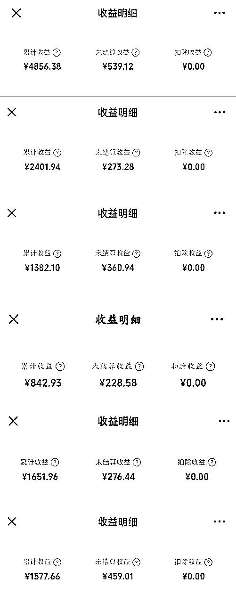
重要的是，大家都是从纯素人小白开始做的，而且都是不是全职，纯粹就是边玩边赚的心态，因为这个项目只要愿意持续地做，都会有收益。
问一问这个平台，内容发布不要求文采好，语言通顺就可以，所以对于大部分普通人来说，输出都不难。另外，内容的发布限定字数 500 字，通常一篇内容只需要写两三百字就够了，对于输出长篇内容有困难的人来说，门槛无疑就降低了。
问一问开通创作分成计划以后，只要你持续的去发布内容，就可以一直有收益，而且收益不是一篇跑，也不是近期写的才会跑，是所有的都有可能跑，它的收益是完全的复利形式。
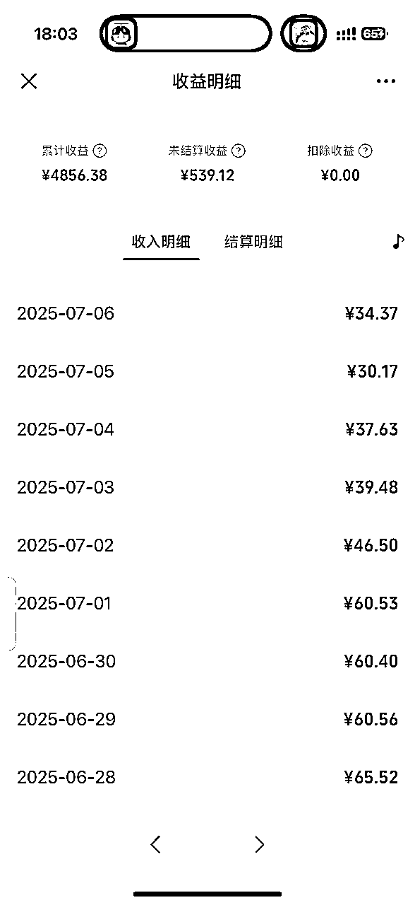
问一问的账号身份是视频号或者公众号，而不是单独的一个账号，所以它的粉丝会积累到你的视频号或者公众号账号上面。
如果你想对某个公众号或者视频号去做一个冷启动，那它就可以帮你积累第一波粉丝。如果你在问一问分享的内容比较接近你的专业或者你的副业领域的话，还有机会通过视频号或者公众号转化到私域再进行变现。
涨粉数据案例：
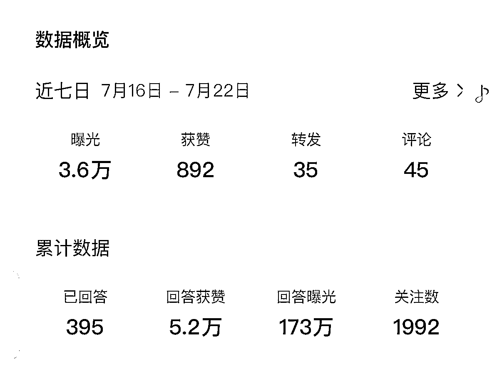
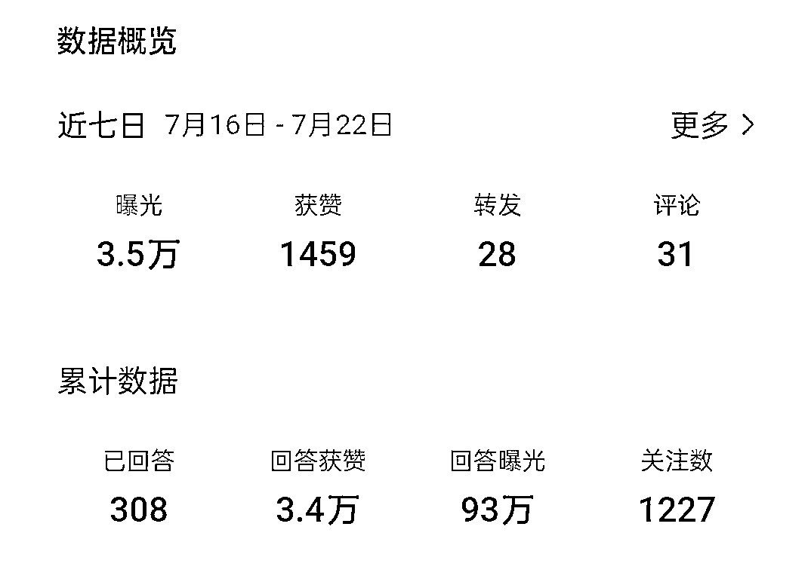
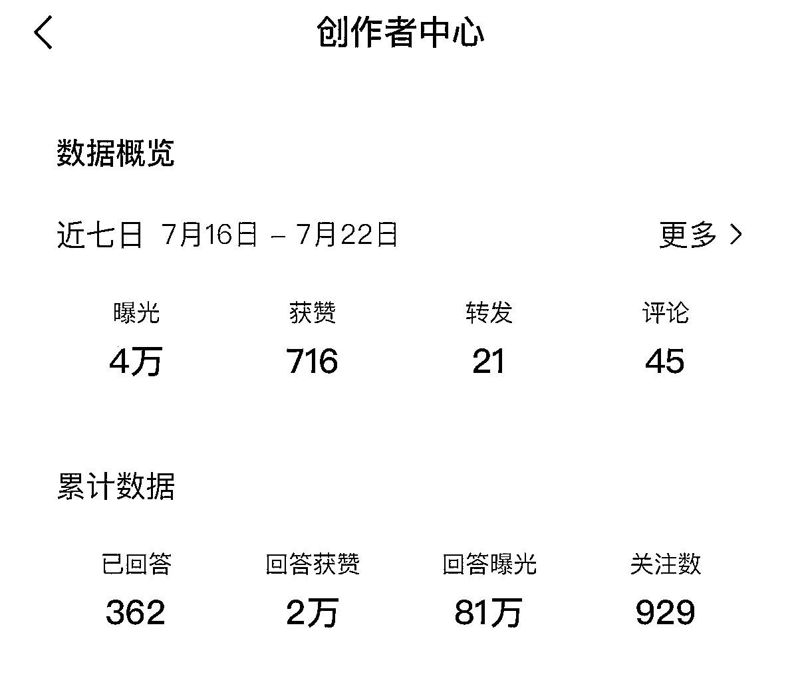
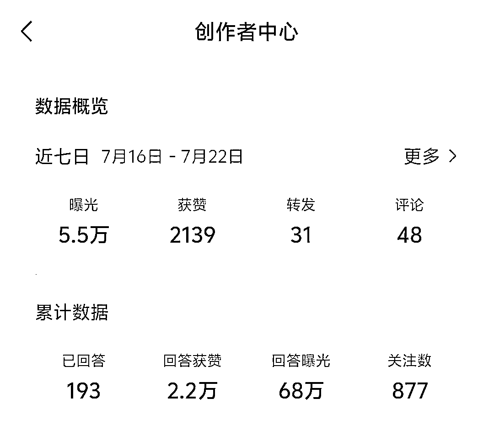
问一问和公众号一样，都是挣流量主收益。在开通分成计划以后，问一问的评论区会出现广告，类似于公众号文末广告，产生曝光和点击的收益。
问一问开通分成计划的要求：
与公众号不同的是：公众号需要 500 个粉丝才能开通流量主，但是问一问只需要 100 个粉丝就可以开通流量主，而且甚至有时候不需要 100 个粉丝就可以开通（我陪伴群已经有学员在没有 100 个粉丝的基础上就被邀请开通分成计划了）。
具体案例可以看我发布的这条风向标：
https://t.zsxq.com/pgC0S。
第一类：分享欲望很强的人
问一问平台，你可以想象成是一个类似于微博或者朋友圈一样的平台，就是你可以去自由分享一些吃喝玩乐的照片，然后加上感悟或者经验分享的地方。
第二类：想要挣钱的自媒体新手
做自媒体三四年，我看到的最简单的项目，除了小绿书，就是问一问了，普通新手也可以很快得到正反馈，他不要求你要垂直在某一个领域去发内容，而是说你看到的任何新奇的、值得分享的内容都可以去发。
第三类：想要记录生活、边玩边赚的人
有很多人都喜欢出去玩，然后也拍了很多照片，但总觉得发在朋友圈很不好意思，那这时候就可以发到问一问，问一问就是一个既可以让你把自己的分享欲望发散出去，又可以挣到钱的平台，真的是边玩边赚。
比如：我去打卡了某家店，我觉得有些菜还不错，我记录下来吃的感觉，下次去就可以翻出这篇帖子看看我上次吃的是什么。
问一问的入口：
微信 >> 发现 >> 搜一搜 >> 问一问
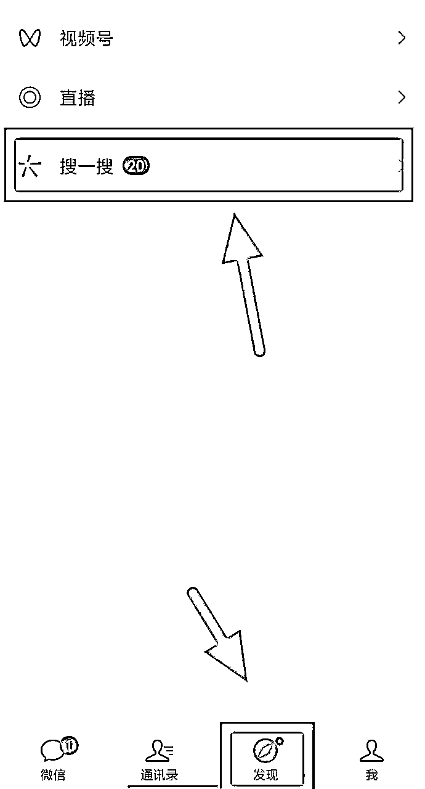
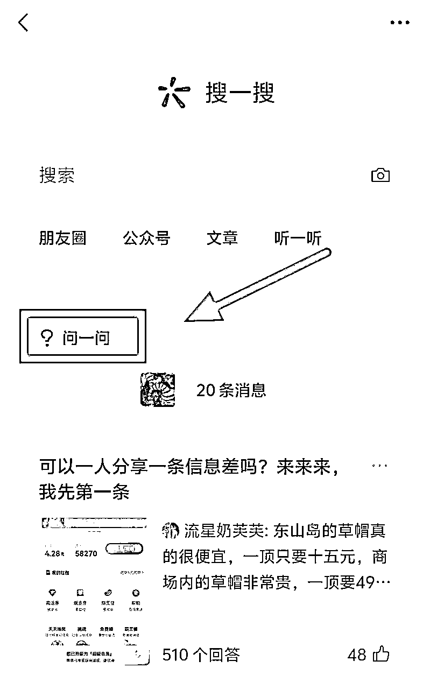
问一问没有单独的平台，也没有单独的 APP，我估摸着类似于腾讯的一个测试项目，小绿书废了，问一问又起来了。目前的问一问给人的趋势感觉就是往“知乎”+“小红书”在发展。
小红书目前有个优势就是，大家有什么问题都喜欢去小红书搜，因为小红书总是可以给出图文并茂的答案，而且平台非常的活跃，之前的小绿书就是想模仿小红书，结果太多的人走了搬运的路子，给平台造成了很多的垃圾内容，价值感就提不上去了。
问一问的出现，本身有天然的优势，用户基数大，且便于传播。而且大家有问题也会去微信里面搜一搜，但是传统的搜一搜得出来的答案一般都是长篇大论的推文，现在提供一个短小精炼的内容平台就会非常有优势。
问一问发内容有 3 种形式：发布、回答、讨论。
写内容的入口：
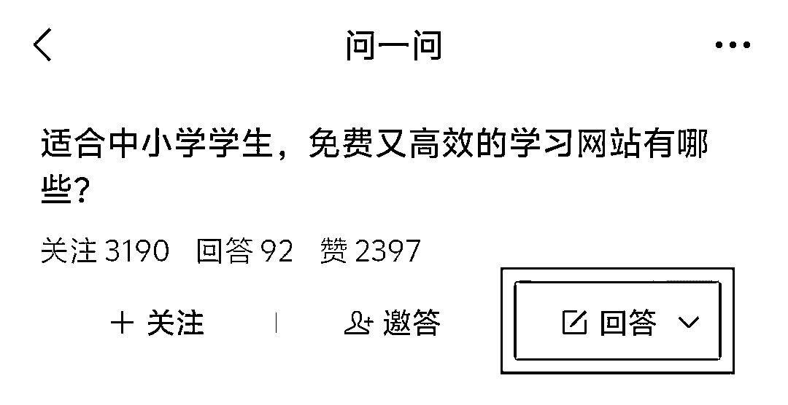
三种形式的区别：
三种形式的优点：
问一问的排版技巧：
注意阅读的呼吸节奏，每 2-4 行作为一段，每段之间空一行，字数写 300 字左右就好。
比如：
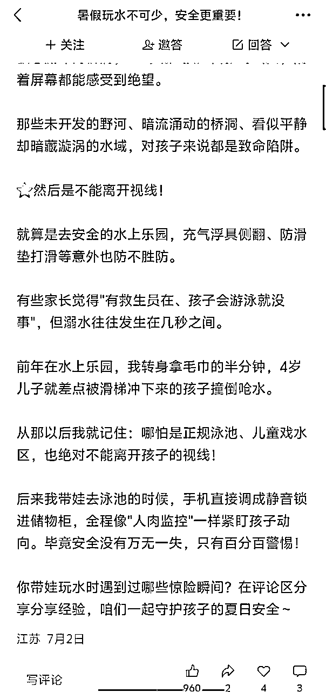
问一问和其他平台不同，它目前不限制个人分享领域，反倒和打造IP很像，它需要真人感，有个人定位后，围绕自己的生活相关去分享都非常好。
如果一定要分享赛道的话，当前来讲，官方比较推荐写的赛道和小红书早期赛道很像，结合官方小助手的答疑和个人经验分享 5 个素人建议入手的赛道。
暑假正是旅游高峰期，我用小号测试了7月份的数据，这类数据的转粉和曝光明显要高很多，非常建议发，我这边有学员 10 天就有了 100+ 粉丝。
举个例子：
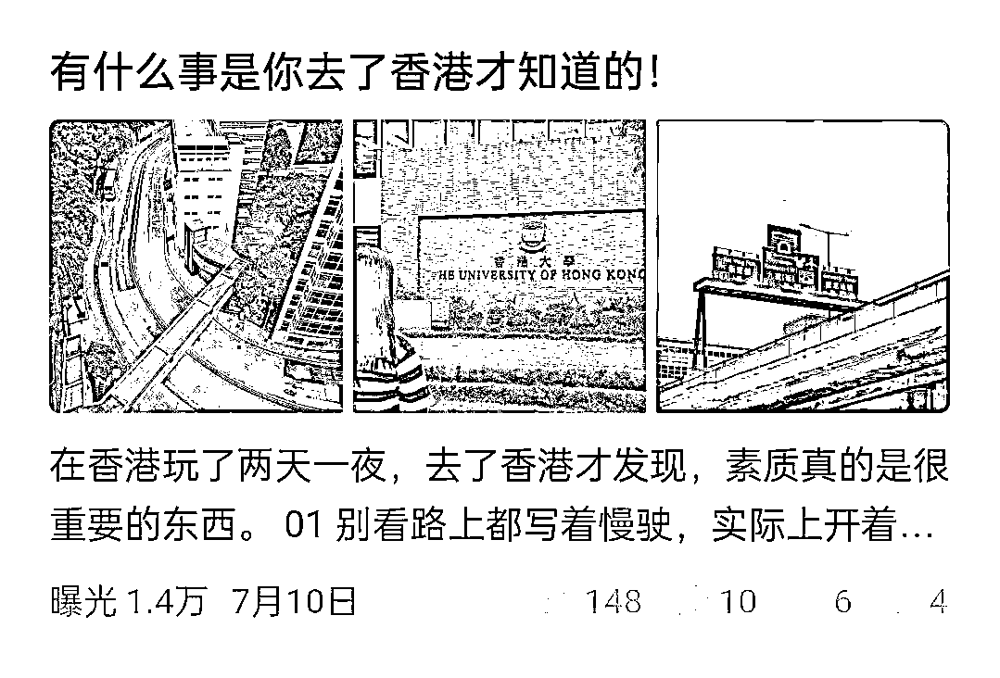
不管是宝妈宝爸带娃，还是养宠物，只要是和这些人群相关的，点赞数据都很好。
例如：
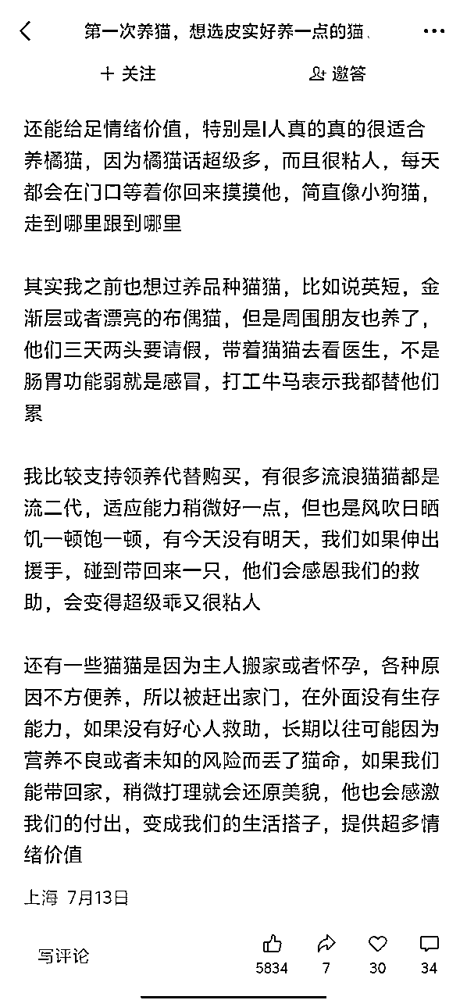
有钱的老板可以看看车子、房子相关的话题，热度也很高。
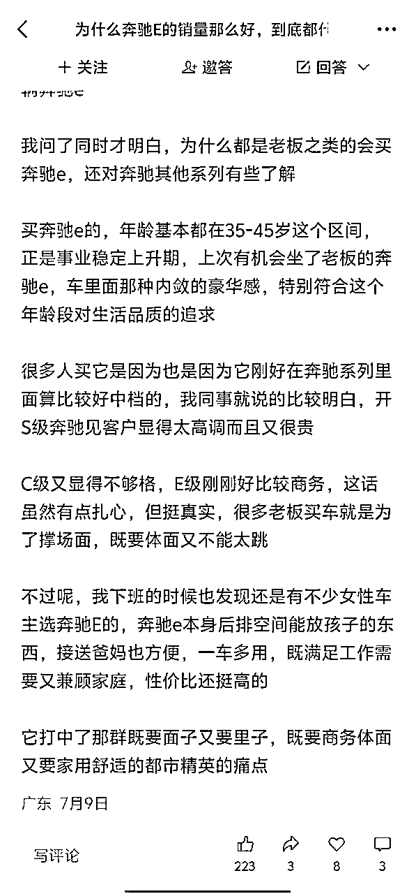
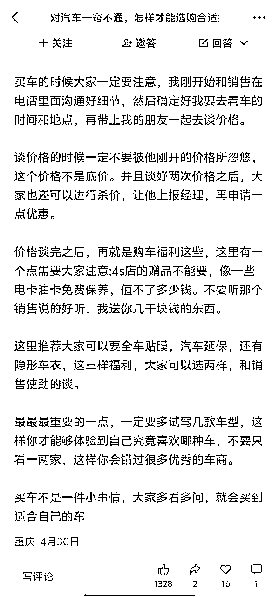
AI热度很高，很多圈友都有AI技术相关的底子，简单分享一些技巧或者逻辑就可以圈粉和大曝光。
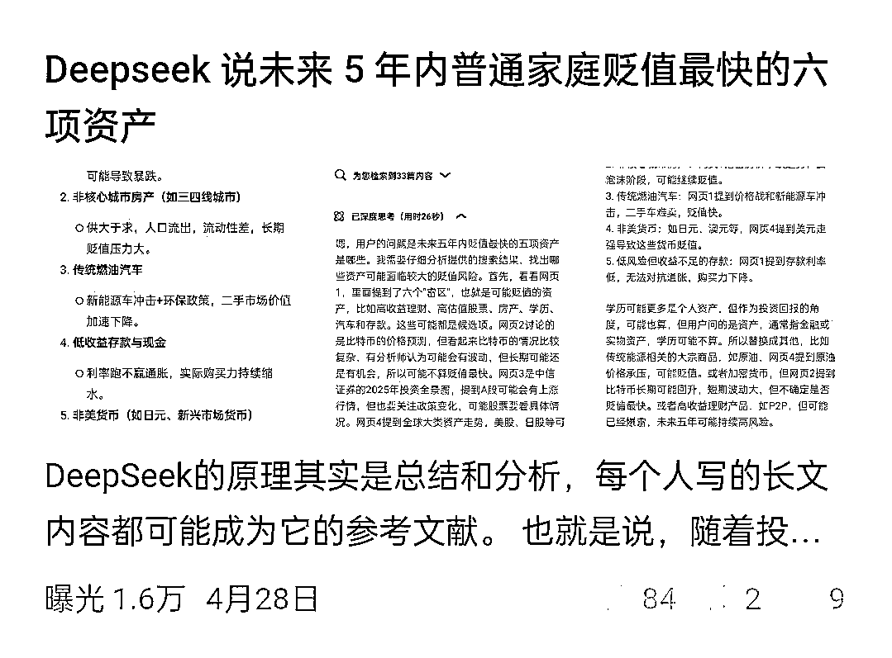
这也是官方主要推流方向之一，目前还在邀请问一问作者们进行写作，比较适合女生。
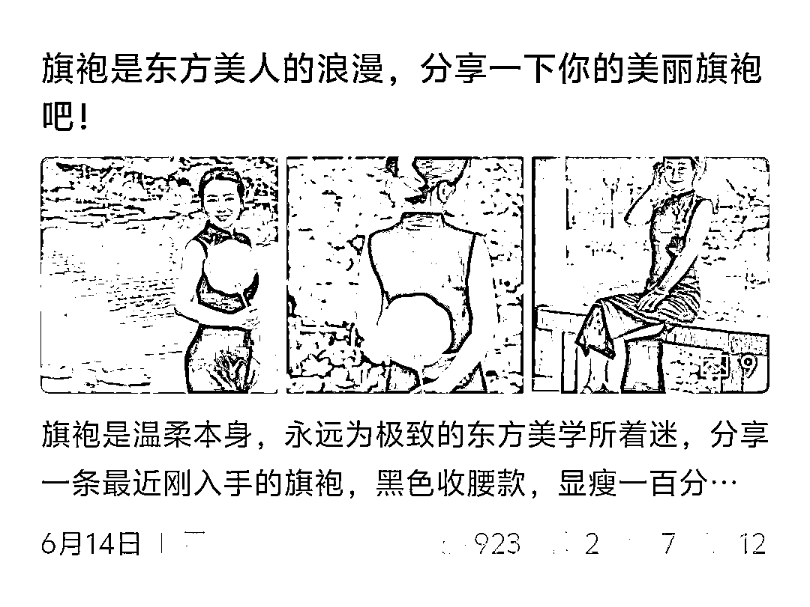
其实有很多人在做问一问，粉丝达到了 100 个以上，篇数也有了 30 篇以上，但是申请开通创作分成计划，连续好几次都被打回了，核心就在于“质量问题”。
关于质量，官方没有给出特别明确的规则指示，我们也是通过多个账号的测试，才发现有些技巧可以帮助快速开通创作分成。
在这里分享最关键的两个：
第一个：前期多发布
发布和回答的比例至少是对半开，要不就发布条数比回答的条数要多一些。我当时账号申请创开通创作分成计划是秒通过的，他都没有人工审核，直接系统就给我过了。
原因就是我前期写了很多条发布（我当时以为他的 30 条要求是写 30 条发布），所以我前期“回答”的条数其实不是特别多，而是以“发布”为主。
第二个：图文并茂
问一问，现在是往小红书方向在靠，所以如果你要写内容的话，一定要搭配图片，这样的话他才能有足够的丰富性，显得内容质量够高。
如果你打算做一个长期可持续的账号，不要用AI输出。
问一问对 AI 的限制比任意一个平台都更严格。除非账号本身权重很高，问一问都是以“人工审核”为主，一旦察觉你写的内容像 AI，直接就不给流量了。就算是给了曝光，也会卡创作分成计划的开通。又或者等到最后，会秋后算账，开通分成计划后背限流。
如果你打算做一个长期可持续的账号，尽量保证前 80 个粉丝都是自然涨起来的，且内容质量已经过了隐形的“人工审核期”——就是更新了至少 10 天以上。不然后期也是卡创作分成计划的开通或者限流，会非常难受，因为账号可能很难救回来。
问一问的身份有两种，一种是视频号，一种是公众号。如果你是以公众号的身份在做问一问，那问一问涨的粉丝都会叠加到公众号上，自然而然就引流到公众号啦！如果你不是做的泛领域记录，而是写专业领域的问一问，那是可以联动公众号转化私域的。
答案是肯定的，我朋友圈已经有一个人做 6-7 个账号的了，因为一个人可以认证 1 个公众号+ 2 个视频号，如果还可以借家人的身份证，就可以实现矩阵化运营，收益还是可观的，比如：月入 5 位数。
有不少其实遇到过这个问题，包括我，明明是自己辛辛苦苦敲的字，审核竟然说我 AI，真是离了个大谱。后面才发现，会被判 AI 的原因一般是写得太正式了，很像“机构文”，但问一问的真实感，要求大家写口水文、流水账，就是任意一个人都能看的懂，且觉得不像说教的内容。对于问一问这种“宁可错杀一万，不放过一个”的态度，建议大家遇到这样的情况，直接放弃这条，不要申诉，因为完全就是浪费时间，你可以另外再写一条。
说实话，不建议使用什么固定的框架或者模板，越是模板化越是容易判AI，就直接有逻辑的输出内容就可以，口水话多一点，不要太正式。如果想快速输出，口述内容也不错，既可以接地气，又能提高效率。
绝对不可以！和内容一样，图片一旦用AI，也是限流，问一问会认为你在水垃圾，无效的发布或者回答是不计入条数的，在申请开通创作分成计划时是会被卡的。
问一问是个小而美的内容平台，正反馈来得非常快，生财是踩在风口上的圈子，希望大家都能跟上队伍，从小钱开始挣大钱呀！
以上就是我的全部分享，也欢迎继续讨论。
写在最后：
这次的内容输出非常感谢生财官方运营 @小武 的约稿，是他在看到中标帖以后来找我出经验贴。由于是第一次写经验贴，也不懂如何分享合适，要感谢多次中标精华帖的 @越越 提供框架灵感，希望这篇经验贴可以帮到想要做问一问的圈友。